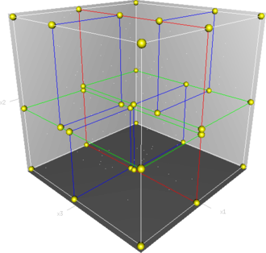

Back
Cleaning Hell, One Vertex at a Time
Technical Art Work-In-Progress of 'Infernal Cleaner'.
In this post, we're diving into some of the technical challenges and solutions behind the scenes of our game, Infernal Cleaner. Here's a look my approach to runtime vertex painting, materials and additional VFX. We will be breaking down each core element.

1. Runtime vertex painting
I chose to implement vertex painting as our blood painting method over render texture method due to it's simplicity, but it’s notwithout its share of hurdles:
Problems:
- No GPU instancing, mesh data different for each asset.
- Introduces additional 3D asset requirements.
- High CPU workload issue when vertex painting.
- Not compatible with traditional LOD work-flow
// Paint-vert: result = Sphere Overlap Check on a raycast.
// This is within a coroutine.
foreach (var col in result)
{
if (!col)
continue;
col.TryGetComponent(out Cleanable cleanable);
if (cleanable)
{
Vector3 returnColor = Global.I.PaintVert(
col.GetComponent<MeshRenderer>(),
hit.point,
// Paint strength depending on number of objs being painted
paintStrengthNormal * result.Length,
paintRadius,
//
cleanable.KdTree);
}
// Paint 1 mesh per frame
yield return null;
}
Solution:
I optimised the vertex painting algorithm by using coroutine to distribute task over multiple frames, as well as implementing a spatial partitioning algorithm (k-d tree) to efficiently reduce the size of our loop when calculating vertex painting and fall-offs.
k-d tree is particularly efficient when it comes to finding nearest neighbour vertices. This eliminates all of our CPU-bound vertex painting performance issues.
// Paint-vert: result = Sphere Overlap Check on a raycast.
// This is within a coroutine.
foreach (var col in result)
{
if (!col)
continue;
col.TryGetComponent(out Cleanable cleanable);
if (cleanable)
{
Vector3 returnColor = Global.I.PaintVert(
col.GetComponent<MeshRenderer>(),
hit.point,
// Paint strength depending on number of objs being painted
paintStrengthNormal * result.Length,
paintRadius,
//
cleanable.KdTree);
}
// Paint 1 mesh per frame
yield return null;
}
- Splitting tasks over multiple frames with coroutines. 
- Spatial partitioned the mesh using k-d tree.
// the KDTree was generated during Init()
KDQuery query = new KDQuery();
query.Radius(tree, originLocal, radius, results);
float redAmountDelta = 0f;
float greenAmountDelta = 0f;
float blueAmountDelta = 0f;
foreach (int i in results)
{
Vector3 vertex = vertices[i];
float distanceSqr = (originLocal - vertex).sqrMagnitude;
if (distanceSqr < radiusSqr)
{
float proximity = 1.0f - Mathf.Sqrt(distanceSqr) / radius;
float originalRed = colors[i].r;
float originalGreen = colors[i].g;
float originalBlue = colors[i].b;
float redChange = channelStrength.x * proximity * Time.deltaTime;
float greenChange = channelStrength.y * proximity * Time.deltaTime;
float blueChange = channelStrength.z * proximity * Time.deltaTime;
float newRed = Mathf.Clamp01(originalRed - redChange);
float newGreen = Mathf.Clamp01(originalGreen- greenChange);
float newBlue = Mathf.Clamp01(originalBlue- blueChange);
redAmountDelta += originalRed - newRed;
greenAmountDelta += originalGreen - newGreen;
blueAmountDelta += originalBlue - newBlue;
// Update vertex color array
colors[i].r = newRed;
colors[i].g = newGreen;
colors[i].b = newBlue;
}
}
...

- Occlusion culling to control draw-calls.
2. Layers of blood


- Master Shader: Triplanar sample for blood layers.
- Problem: 15 texture samples...
- Problem: lightmap bake will pick up the redness from mesh
Master Material

3. Visual effects
This was implemented on master shader's emission output.
VFX: Puddle
- Object-Pooled Decal Projector
- SetFloat() on raycast to increase puddle size (erosion map lerp)
Puddle Decal Shader
We're modifying only Normal,Metal*,Smoothness.

VFX: Droplets

- Spawn on raycast from Object-Pool